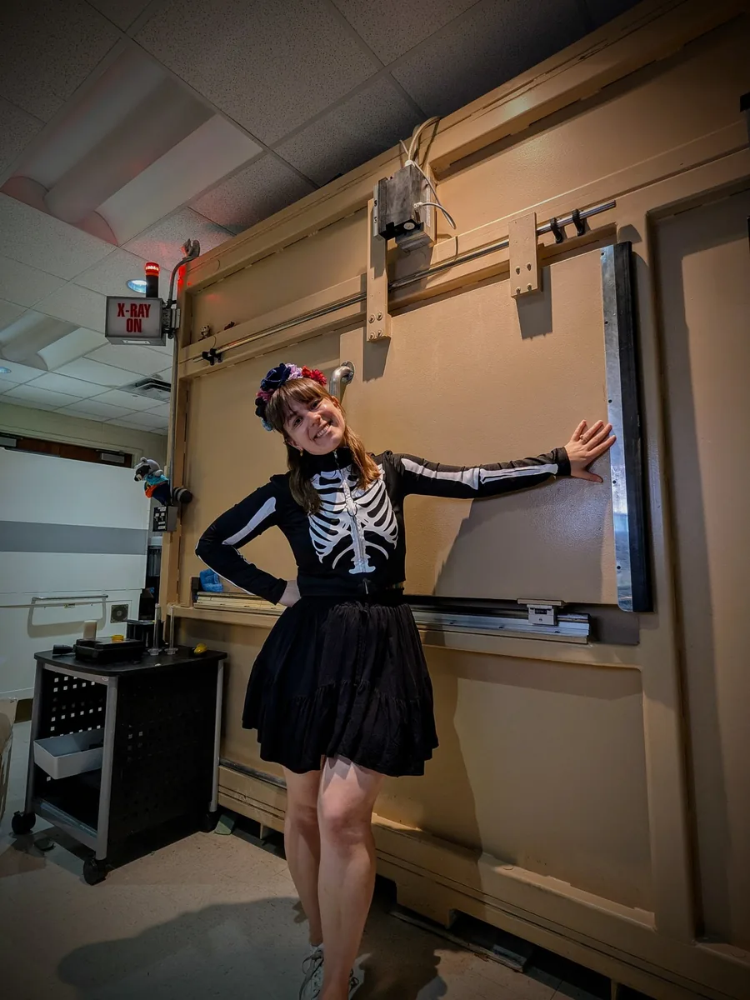

About me
Dr. Jaimi A. Gray
Research Scientist III · UTCT, The University of Texas at Austin
I am a research scientist at the University of Texas at Austin's High Resolution X-Ray Computed Tomography facility (UTCT). We use Computed Tomography (CT) to create digital 3D representations of an incredibly broad range of objects: geological samples, engineering and industrial parts, planetary objects, fossils, vertebrates, invertebrates, and samples for medical research. I specialise in contrast-enhanced imaging of vertebrate anatomy using diffusible iodine-based contrast-enhanced CT (diceCT), and I am heavily involved in the Non-Clinical Tomography Users Research Network (NoCTURN).

Research interests
I am passionate about natural history digitisation: turning museum specimens into 3D data that anyone can use. Through the open Vertebrate (oVert) project I created digital datasets of specimens from natural history collections and made them freely available on MorphoSource for researchers, educators, artists, and anybody else. I am also a strong advocate for FAIR and open science, making data Findable, Accessible, Interoperable, and Reusable. Through the Non-Clinical Tomography Users Research Network (NoCTURN) I work with the wider CT community to share data, best practices, and training.
Alongside this, I collaborate on a broad range of herpetology projects: from the evolution of skull shape in Australian dragon lizards and tail shape in geckos, to the anatomy of frogs, caecilians, snakes, and turtles, to describing new species such as miniature flea-toads from Brazil's Atlantic rainforest.
- Natural history digitisation
- FAIR & open science
- diceCT & contrast-enhanced imaging
- Herpetology
- Comparative anatomy
- New species descriptions
Experience
Positions
2024–Now
Research Scientist III
High Resolution X-Ray Computed Tomography (UTCT)
University of Texas at Austin,
Austin, Texas2023–2024
Postdoctoral Associate
Non-Clinical Tomography Users Research Network (NoCTURN)
Florida Museum of Natural History, University of Florida
Gainesville, Florida2021–2023
Postdoctoral Associate
The open Vertebrate project
Florida Museum of Natural History, University of Florida
Gainesville, Florida2019–2020
Postdoctoral Fellow
Endeavour postdoctoral Fellowship
Oklahoma State University Center for Health Sciences
Tulsa, Oklahoma2019
Postdoctoral Associate
Harvestmen weaponry project
University of Auckland
Auckland, New Zealand
Education
2014–2018
PhD (Biological Sciences)
Skull evolution in the Australian dragon lizards
University of Adelaide
Adelaide, South Australia2014
Bachelor of Science (Honours)
Agamid lizard skeleton identification and inferences for Pleistocene distributions
University of Adelaide
Adelaide, South Australia2011–2013
Bachelor of Science (Evolutionary Biology)
Major: Palaeontology
University of Adelaide
Adelaide, South Australia
Publications
Newest first. My name is in bold.
2025
-
A FAIR narrative on open science: when, who, what and how of computed tomography and the NoCTURN network
Royal Society Open Science, 12(12)
DOI 10.1098/rsos.251691 ↗ -
Climate change predicts Quaternary extinctions and extant genetic diversity in a threatened Australian lizard
Current Biology, 35(23), 5669-5682
DOI 10.1016/j.cub.2025.09.067 ↗ -
Phylogenetic position and osteology of a population of Mysticellus franki Garg & Biju, 2019 (Anura: Microhylidae) from south of the Palghat Gap, Western Ghats, India: Phylogeny and osteology of Mysticellus from southern Western Ghats
Hamadryad, 42(1 and 2)
Read the paper ↗ -
A new species of flea-toad of the genus Brachycephalus Fitzinger, 1826 (Anura: Brachycephalidae) from the cloud forests of Serra do Mar, southeastern Brazil
Zootaxa, 5691(2), 231-256
DOI 10.11646/zootaxa.5691.2.3 ↗ -
Establishment of aquatic Rio Cauca Caecilians, Typhlonectes natans (Fischer 1880)(Gymnophiona: Typhlonectidae), in Florida, with notes on their relative abundance, distribution, and natural history
Reptiles & Amphibians, 32(1), e23352-e23352
DOI 10.17161/randa.v32i1.23352 ↗ -
Aberrant placental structure is corrected with repeated nanoparticle-mediated IGF1 treatments in a guinea pig model of fetal growth restriction
Translational Research in Anatomy, 100424
DOI 10.1016/j.tria.2025.100424 ↗ -
Are modern cryptic species detectable in the fossil record? A case study on Agamid lizards
Systematic Biology, 74(3), 373-394
DOI 10.1093/sysbio/syae067 ↗ -
The diffusion diaries: Diffusible iodine-based contrast-enhanced computed tomography for vertebrate natural history specimens
Integrative Organismal Biology, 7(1), obaf014First author
DOI 10.1093/iob/obaf014 ↗
2024
-
Among the world’s smallest vertebrates: a new miniaturized Flea-Toad (Brachycephalidae) from the Atlantic rainforest
PeerJ, 12, e18265
DOI 10.7717/peerj.18265 ↗ -
Adaptive tails? Parallel evolution of expanded tails in monsoonal tropics lineages of an Australian gecko radiation (Oedura)
Zoological Journal of the Linnean Society, 202(2), zlad186
DOI 10.1093/zoolinnean/zlad186 ↗ -
The role of networks to overcome large-scale challenges in tomography: The non-clinical tomography users research network
Tomography of Materials and Structures, 5, 100031
DOI 10.1016/j.tmater.2024.100031 ↗ -
The only “lungless” frog has a glottis and lungs
Current Biology, 34(10), R492-R493
DOI 10.1016/j.cub.2024.03.017 ↗ -
Increasing the impact of vertebrate scientific collections through 3D imaging: The openVertebrate (oVert) Thematic Collections Network
BioScience, 74(3), 169-186
DOI 10.1093/biosci/biad120 ↗ -
The first full body diffusible iodine‐based contrast‐enhanced computed tomography dataset and teaching materials for a member of the Testudines
The Anatomical Record, 307(3), 535-548First author
DOI 10.1002/ar.25282 ↗
2023
-
A systematic compendium of turtle mandibular anatomy using digital dissections of soft tissue and osteology
The Anatomical Record, 306(6), 1228-1303
DOI 10.1002/ar.25037 ↗ -
What killed the rarest snake in North America?
Ecology, 104(1), 1-5
DOI 10.1002/ecy.3857 ↗
2021
-
A guide for optimal iodine staining and high‐throughput diceCT scanning in snakes
Ecology and Evolution, 11(17), 11587-11603
DOI 10.1002/ece3.7467 ↗
2019
-
Exceptional disparity in Australian agamid lizards is a possible result of arrival into vacant niche
The Anatomical Record, 302(9), 1536-1543First author
DOI 10.1002/ar.24096 ↗ -
Evolution of cranial shape in a continental-scale evolutionary radiation of Australian lizards
Evolution, 73(11), 2216-2229First author
DOI 10.1111/evo.13851 ↗ -
Changes in ontogenetic patterns facilitate diversification in skull shape of Australian agamid lizards
BMC Evolutionary Biology, 19(1), 7First author
DOI 10.1186/s12862-018-1335-6 ↗
2017
-
Geometric morphometrics provides an alternative approach for interpreting the affinity of fossil lizard jaws
Journal of Herpetology, 51(3), 375-382First author
DOI 10.1670/16-145 ↗